注意事項
確認できるまで何も入れない
- 誤って気管・肺へ入ると、栄養剤や薬剤の注入で重篤な障害を起こす
- 初回挿入後は、指示された適切な方法で先端位置を確認する
- 気泡音だけで胃内留置と判断しない
- 次の変化があれば使用を止める
- 抜け
- ずれ
- 嘔吐
- 激しい咳
- 呼吸状態悪化
- 確認結果が不明なまま注入しないもの
- 栄養剤
- 薬剤
- 水
- 空気
挿入前に医師へ確認する状態
- 頭蓋底骨折や重い顔面・鼻腔外傷を疑う
- 挿入前に医師へ確認する消化管の状態
- 食道狭窄・損傷
- 腐食性物質の誤飲
- 最近の上部消化管手術
- 挿入前に医師へ確認する出血リスク
- 食道静脈瘤
- 出血傾向
- 繰り返す鼻出血
- 不安定なら挿入前に医師へ確認
- 意識
- 咳嗽
- 嚥下
- 呼吸
- 過去に挿入困難や誤挿入があった
胃管の目的
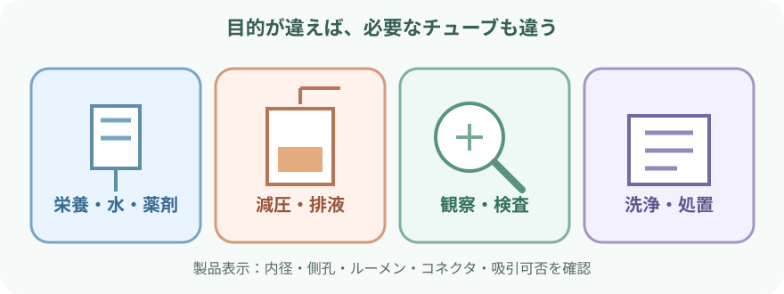
- 同じ管で全部できるとは限らない。
- 目的に合わせて選ぶ製品の仕様
- 内径
- 先端
- 側孔
- ルーメン
- コネクタ
- 経腸栄養で消化管へ投与するもの
- 栄養剤
- 水分
- 指示された薬剤
- 減圧・排液：胃内の液体やガスを外へ出し、膨満・嘔吐を軽減する
- 観察・検査で確認する胃内容
- 量
- 色
- 性状
必要時に検体を採取する。
- 洗浄・処置：適応と専用製品を選び、医師の指示下で行う
- 誤嚥を完全に防ぐ器具ではない。
- 合わせて管理する項目
- 胃内容
- 逆流
- 意識
- 咳嗽
- 体位
- 投与方法
NGチューブとEDチューブの違い
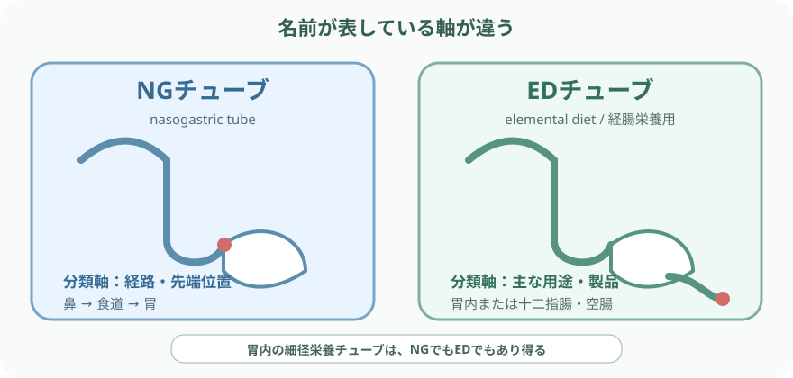
- NGは「どこを通り、どこまでか」。
- EDは「何に使う製品か」。
- 分類の軸が違う。
NGチューブ（nasogastric tube）
- 鼻から食道を通り、先端を胃内へ置くチューブ
- 目的の異なるNGチューブ製品の例
- 栄養用
- 投薬用
- 減圧・排液用
- NGチューブで異なる仕様
- 細径・太径
- 単腔・複腔
- 側孔
- 材質
- コネクタ
- 「NGだから吸引できる」「NGだから栄養に使える」と決めない
EDチューブ（elemental diet／経腸栄養用チューブ）
- 経腸栄養を主目的とする細径チューブの呼び方・製品名として使われる
- 製品と指示により選ぶEDチューブ先端位置
- 胃
- 十二指腸
- 空腸
- 診療報酬上の「EDチューブ挿入術」は、X線透視下で十二指腸・空腸まで留置する手技を指す
- 細径のため閉塞しやすく、通常の胃減圧管と同じ吸引には使えない製品がある
先端位置でできることが変わる
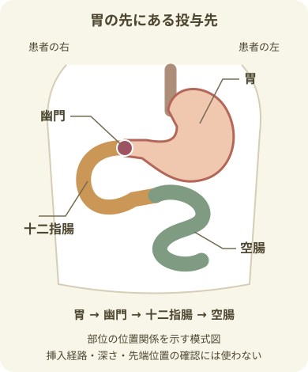
- 胃は主に上腹部の左側にあり、幽門から十二指腸、空腸へ続く。
- 部位の位置関係を示す図で、挿入経路・深さ・先端位置の確認には使わない。
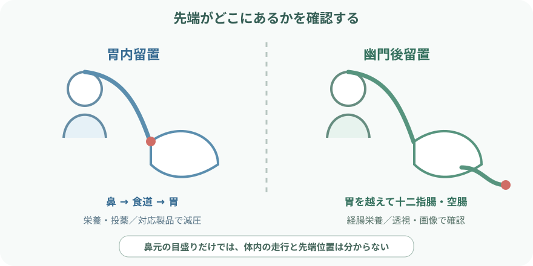
- 鼻元の目盛りが同じでも、体内で折れたり戻ったりすることがある。
- 画像や承認された方法で先端を確認する。
- 胃内：胃の貯留能を利用できる。胃内容の吸引・減圧は対応製品で行う
- 十二指腸・空腸：幽門を越えて投与する。通常、胃内投与より持続的で慎重な投与管理が必要
- 食道内・咽頭内：誤留置。逆流・誤嚥につながるため使用しない
- 気管・肺：誤挿入。直ちに使用せず、安全に対応する
挿入前の観察
指示・製品
- 目的
- 予定する先端位置
- 製品
- 挿入経路
- 使用期間
患者への説明・既往
- 本人確認
- 説明への理解
- 過去の挿入歴と困難
呼吸・嚥下
- 意識
- 呼吸数
- SpO₂
- 咳嗽
- 嚥下
- 分泌物
鼻腔
- 鼻腔の通り
- 出血
- 疼痛
- 変形
- 皮膚
- 左右差
口腔・咽頭
- 口腔・咽頭
- 義歯
- 嘔吐反射
- 誤嚥リスク
腹部・排泄
- 腹部膨満
- 疼痛
- 悪心・嘔吐
- 腸蠕動
- 排便・排ガス
出血・疾患歴
- 抗凝固薬
- 出血傾向
- 上部消化管疾患・手術歴
必要物品
基本物品
- 指示された種類・太さ・長さのチューブ
- 製品指定のコネクタ
- 製品指定のキャップ
- 水溶性潤滑剤
- 手袋
- 皮膚保護材
- 長さを測る器具
- 油性ペンなどマーキング用品
- 経腸栄養用シリンジ
- 廃棄物袋
防水・清拭・嘔吐物受け（それぞれ選ぶ）
- 防水シートまたはタオル
- ティッシュまたはガーゼ
- 膿盆または嘔吐物受け
固定用（製品・患者に合わせて選ぶ）
- 固定用テープまたは専用固定具
必要時に準備
- マスク
- 眼の防護具
- エプロン
- SpO₂モニター
吸引・排液する場合、指示に従って準備
- 吸引装置
- 排液バッグ
位置確認に必要なもの
- 物品
- 検査
- 聴診器だけを位置確認物品として準備しない。
- 製品によって必要になる物品・検査
- スタイレット
- ガイドワイヤ
- 透視
- 専用確認装置
経鼻胃管挿入の流れ
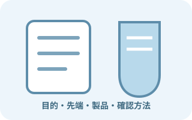
指示・目的・製品を照合- 胃内か幽門後か、栄養か減圧かを確認。
- 挿入前にそろえる確認事項
- 電子添文
- 禁忌・注意
- 実施者
- 位置確認方法
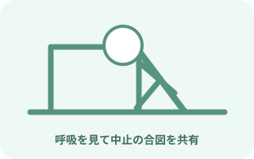
説明し、呼吸を見られる体位へ- 可能なら上体を起こす。
- 確認する項目
- 義歯
- 嘔吐物受け
- 吸引
- ナースコール
- 中止の合図を共有する。
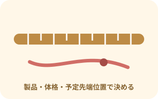
予定挿入長を測って印を付ける- 予定挿入長を決める際に確認する項目
- 患者の体格
- 予定先端位置
- 製品表示
- 院内手順
- 全員へ同じ長さ・同じ測定式を当てはめない。
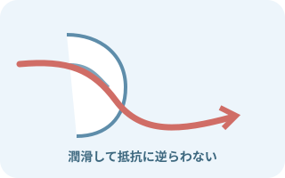
潤滑し、無理なく進める- 鼻腔底に沿わせる。
- 咽頭通過は嚥下できる患者なら安全を確認して協力を得る。
- 抵抗に逆らわない。
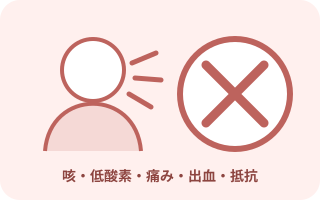
呼吸変化・咳・抵抗なら止める次の変化があれば挿入を中止して評価する- 激しい咳
- 呼吸困難
- チアノーゼ
- SpO₂低下
- 発声困難
- 強い痛み
- 出血
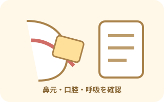
予定位置で仮固定- 仮固定時に確認する項目
- 鼻元の目盛り
- 口腔内のたわみ
- 患者の呼吸
- 画像確認前に深く押し込んだり引き戻したりしない。
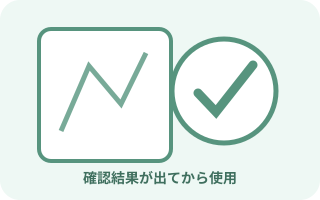
先端位置を確認してから使用- X線撮影など院内で承認された方法で確認。
- 誰が画像・結果を確認したかを記録し、その後に本固定する。
製品と手技ごとの訓練・権限に従う操作
- 幽門後へのEDチューブ留置
- 内視鏡操作
- 透視下の操作
- ガイドワイヤ操作
- スタイレット操作
先端位置確認
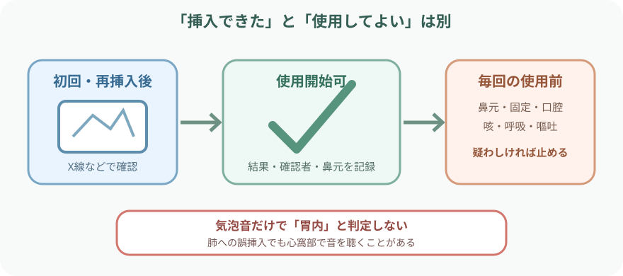
- 「前回使えた」は、今も正しい位置にある証拠ではない。
- 下記の後も位置のずれを疑う。位置のずれを疑う場面
- 移動
- 咳
- 嘔吐
- 体位変換
初回挿入・再挿入後
- X線撮影など、目的と先端位置に適した方法で確認する
- 幽門後留置は透視や画像で十二指腸・空腸の位置を確認する
- 画像では先端だけでなく、チューブ全体の走行と側孔位置も見る
- 位置確認後に記録する項目
- 確認者
- 結果
- 使用開始可否
- 鼻元の長さ
毎回の使用前・勤務ごと
- 鼻元の目盛りと記録値
- 使用前の固定確認
- 固定の緩み
- テープのずれ
- チューブの牽引
- 使用前の口腔・咽頭内確認
- たわみ
- とぐろ
- 使用前の症状確認
- 咳
- 呼吸困難
- SpO₂低下
- 嘔吐
- 逆流
- 疼痛
- 院内手順に基づく胃内容吸引・pHなどの確認
栄養・水・薬剤を投与するとき
- 投与前に確認する項目
- 先端位置
- 指示
- 患者
- 栄養剤・薬剤
- 量
- 速度
- 経路
- 経腸栄養用コネクタを使い、静脈ラインへ接続できないことを確認する
- 投与中は上半身挙上など誤嚥リスクを下げる体位を患者に合わせて整える
- 投与中に観察する腹部・排泄の変化
- 腹部膨満
- 悪心
- 嘔吐
- 逆流
- 腹痛
- 下痢
- 便秘
- 誤嚥を疑う変化の例を観察する
- 咳
- 湿性嗄声
- 呼吸数増加
- SpO₂低下
- 発熱
- 前後のフラッシュ量・方法を合わせる条件
- 製品
- 薬剤
- 患者の水分管理
- 薬剤師へ確認する項目
- 剤形
- 配合
- 粉砕可否
- 栄養剤との相互作用
- 幽門後留置ではボーラス投与が適さない場合がある。
- 投与方式と速度は、先端位置と処方を優先する。
減圧・排液するとき
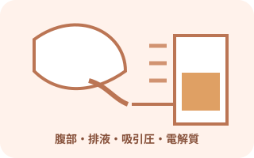
管だけでなく腹部と全身を見る
- 吸引方法
- 自然排液
- 間欠・持続吸引
- 設定圧
- 排液
- 量
- 色
- 混濁
- 臭気
- 血液
- 便様物
- 腹部
- 膨満
- 疼痛
- 硬さ
- 悪心・嘔吐
- 排ガス
- 管
- 屈曲
- 閉塞
- 接続
- 側孔位置
- 固定
- 全身
- 循環
- 脱水
- 電解質
- 酸塩基平衡
留置中の管理
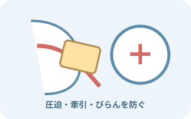
固定と皮膚・粘膜
- 鼻翼の観察
- 発赤
- びらん
- 潰瘍
- 出血
- 疼痛
- 頬・耳周囲の観察
- テープかぶれ
- 圧迫
- 牽引
- 口腔・咽頭・耳の観察
- 口腔乾燥
- 舌苔
- 痰
- 咽頭痛
- 耳痛
- 副鼻腔症状
- チューブの重みを分散し、鼻翼へ食い込ませない
- 固定交換時も鼻元の長さを保持する
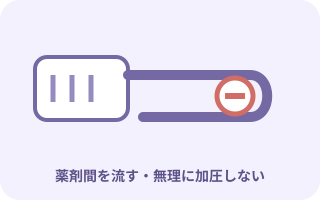
閉塞を予防する
- 投与前後、薬剤間のフラッシュを指示量で行う
- 複数薬剤を一度に混ぜない
- 栄養剤・薬剤をチューブ内へ長時間残さない
- 抵抗があれば強く加圧しない
- 閉塞解除にスタイレットやガイドワイヤを再挿入しない
- 製品ごとに確認する管理項目
- 交換間隔
- 留置期間
- 固定材
- 洗浄液
- 閉塞時対応
- 日付だけでなく、適応が続いているかを毎日確認する。
合併症と異常のサイン
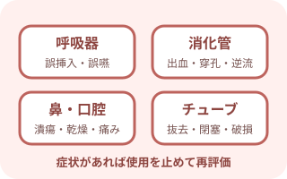
症状を部位で分ける
- 呼吸器の合併症
- 気管・肺への誤挿入
- 誤嚥
- 肺炎
- 気胸
- 消化管の合併症
- 出血
- 穿孔
- 潰瘍
- 逆流
- 悪心・嘔吐
- 下痢・便秘
- 鼻・口腔の合併症
- 鼻出血
- 鼻翼潰瘍
- 咽頭痛
- 副鼻腔炎
- 口腔乾燥
- チューブの異常
- 抜去
- 移動
- 屈曲
- 閉塞
- 破損
- 接続間違い
すぐ使用を止めて報告
- すぐ使用を止めて報告する呼吸の変化
- 新しい咳
- 呼吸困難
- SpO₂低下
- チアノーゼ
- すぐ使用を止めて報告する出血・疼痛
- 大量の吐血・血性排液
- 強い胸腹部痛
- 腹膜刺激症状
- 使用を止めて報告する位置・走行の変化
- 鼻元の長さが変わった
- 口腔内でとぐろを巻いた
- 使用を止めて報告する製品の異常
- チューブが破損した
- スタイレットが抜けない
- 注入中に使用を止めて報告する変化
- 嘔吐
- 逆流
- 意識変化
- 誤嚥疑い
抜去するとき
- 抜去前に確認する項目
- 抜去指示
- 目的終了
- 再留置時の対応
- 注入・吸引を止め、接続を外してチューブ内残留物を確認する
- 患者へ説明し、嘔吐物受けとティッシュを準備する
- 固定を外し、呼吸状態を見ながら滑らかに抜去する
- 抵抗や強い痛みがあれば無理に引かない
- 抜去したチューブで確認する項目
- 長さ
- 先端
- 破損の有無
- 抜去後に観察し記録する項目
- 鼻腔・口腔
- 呼吸
- 悪心
- 腹部症状
単純な経鼻胃管と同じ抜去にしない条件
- 術後吻合部に関わる留置
- スタイレット・ガイドワイヤのある製品
- 幽門後留置
- チューブ損傷の疑い
報告・記録
挿入目的と製品
- 挿入目的
- 製品名
- 材質
- 太さ
- 長さ
- ルーメン
経路と先端位置
- 挿入経路
- 予定された先端位置
- 確認された先端位置
長さ・固定・日時
- 鼻元の目盛り
- 固定位置
- 挿入日時
- 交換日時
- 抜去日時
位置確認
- 位置確認方法
- 確認結果
- 確認者
- 使用開始可否
挿入中の観察
- 咳
- 呼吸
- SpO₂
- 疼痛
- 出血
- 患者の反応
投与内容
- 栄養・水・薬剤の内容
- 量
- 速度
- フラッシュ量
吸引・排液
- 吸引方法・圧
- 排液量
- 色
- 性状
留置中の観察
- 鼻腔・口腔・皮膚
- 腹部
- 呼吸
- 排便
異常時の対応
- 異常
- 対応
- 報告先
- 再確認結果